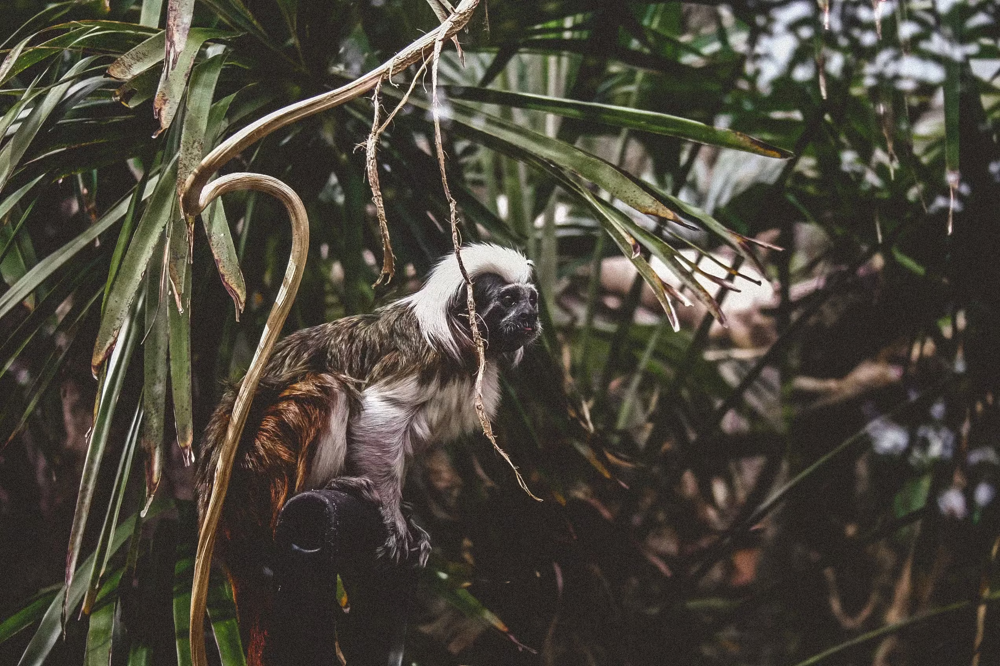

Selyem majom
A selyemmajmok és a velük közeli rokon tamarinok a világ legkisebb főemlősei közé tartoznak, amelyek kizárólag Közép- és Dél-Amerika trópusi esőerdőiben honosak. Különleges, vésőszerű alsó metszőfogaik vannak, amelyekkel képesek szisztematikusan megskalpolni a fák kérgét, hogy hozzáférjenek a kicsorduló, tápanyagokban gazdag fanedvekhez és mézgákhoz. Rendkívül szociális lények; a csoportjaikban szinte mindig ikrek születnek, és a kölykök neveléséből, cipeléséből a család összes tagja – különösen a hímek és a nagyobb testvérek – aktívan kiveszi a részét
Különleges, apró méretük és rendkívül „esztétikus”, cuki megjelenésük miatt a globális illegális díszállat-kereskedelem első számú célpontjai. A vadorzók gyakran teljes családokat mészárolnak le, hogy a kölyköket eladhassák a feketepiacon. Ezt tetézi az Atlanti-parti esőerdők (Mata Atlântica) drasztikus zsugorodása: az erdőirtások miatt az életterük apró, egymástól elszigetelt erdőfoltokra szakadt szét, ami beltenyészethez és a populációk összeomlásához vezet
Az általuk készített fafúrások egyfajta „ingyen konyhaként” működnek a dzsungelben. Az általuk megnyitott fanedveket ugyanis több tucat más állatfaj – köztük ritka madarak, színpompás lepkék és más majomfajok – is fogyasztja, amelyek maguktól képtelenek lennének átvágni a kemény fás kérget. Ha a selyemmajmok eltűnnek, számos más élőlény veszti el az elsődleges táplálékforrását, miközben a rovarok (hangyák, pókok) száma szabályozatlanul megugrik.
